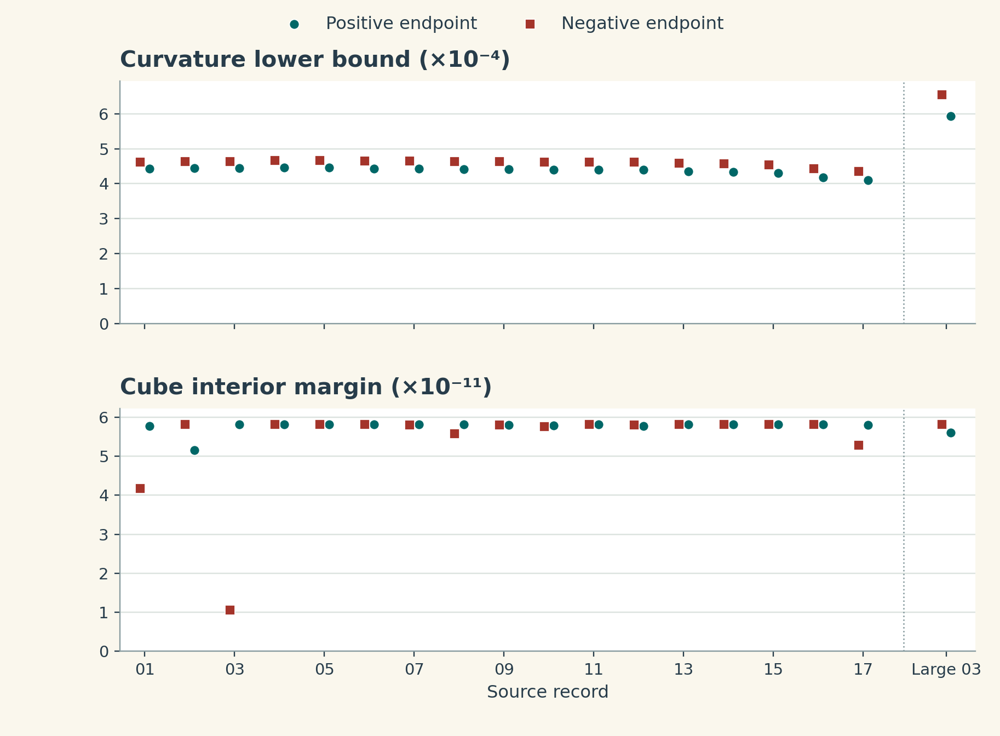

36 strict minima of the cached-quadrature energies
Each of the 36 fixed parameter and drive cases has a unique minimum of its normalized cached-quadrature energy within a matched closed cube. Each minimum lies strictly inside its cube.
With the same preconditioner R and whole-cube defect ZQ, the lower Hessian bound is m = (1 − ZQ)/‖R‖∞ > 0. The proof also requires an independently verified positive-definite symmetric part of R and a smooth cached energy. For every u in the cube with minimizer u*, the energy gap is at least (m/2)‖u − u*‖22.

Root localization and observer errors
For +small 02, the native posterior of 9.05979 × 10⁻¹¹ came from the larger radius 2⁻³². The unchanged point force and a fresh whole-cube derivative bound give a strict self-map on the smaller cube, with posterior 6.59641 × 10⁻¹². The two cubes share the same center, so uniqueness on the larger cube identifies the same root. The frozen observer error uses the original native posterior. The two recentered proofs retain their actual shifts σ and archived binary addition gaps ξ.
These minima concern the frozen binary cached-quadrature energies. Exact-spatial finite-element integration, continuum equations, loading stability, and experimental compatibility require separate evidence.
All 36 bounds
| Case | Curvature bound | Interior margin |
|---|---|---|
| +small 01 | 4.43613035e-04 | 5.77214989e-11 |
| −small 01 | 4.60919957e-04 | 4.18043212e-11 |
| +small 02 | 4.44329565e-04 | 5.16112544e-11 |
| −small 02 | 4.62841095e-04 | 5.82007104e-11 |
| +small 03 | 4.44865965e-04 | 5.81095034e-11 |
| −small 03 | 4.63849391e-04 | 1.06061144e-11 |
| +small 04 | 4.45506622e-04 | 5.82068683e-11 |
| −small 04 | 4.65670255e-04 | 5.81852609e-11 |
| +small 05 | 4.45490144e-04 | 5.82065754e-11 |
| −small 05 | 4.65703001e-04 | 5.81938826e-11 |
| +small 06 | 4.43059221e-04 | 5.82063829e-11 |
| −small 06 | 4.64460004e-04 | 5.81055166e-11 |
| +small 07 | 4.42603134e-04 | 5.81567641e-11 |
| −small 07 | 4.64100527e-04 | 5.80277086e-11 |
| +small 08 | 4.41728534e-04 | 5.82062954e-11 |
| −small 08 | 4.63393676e-04 | 5.57117348e-11 |
| +small 09 | 4.41104678e-04 | 5.80237349e-11 |
| −small 09 | 4.62874948e-04 | 5.80368955e-11 |
| +small 10 | 4.40519659e-04 | 5.78209594e-11 |
| −small 10 | 4.62382436e-04 | 5.75519180e-11 |
| +small 11 | 4.40114784e-04 | 5.82003522e-11 |
| −small 11 | 4.62039572e-04 | 5.82043658e-11 |
| +small 12 | 4.39343377e-04 | 5.77318759e-11 |
| −small 12 | 4.61378752e-04 | 5.80033565e-11 |
| +small 13 | 4.34818752e-04 | 5.82076414e-11 |
| −small 13 | 4.58116598e-04 | 5.81429166e-11 |
| +small 14 | 4.34204969e-04 | 5.82065474e-11 |
| −small 14 | 4.57527940e-04 | 5.82067297e-11 |
| +small 15 | 4.30815726e-04 | 5.82067991e-11 |
| −small 15 | 4.54481065e-04 | 5.82067661e-11 |
| +small 16 | 4.18579674e-04 | 5.82038394e-11 |
| −small 16 | 4.43239158e-04 | 5.82076327e-11 |
| +small 17 | 4.09887398e-04 | 5.80845848e-11 |
| −small 17 | 4.35606320e-04 | 5.28567054e-11 |
| +large 03 | 5.92966049e-04 | 5.60379653e-11 |
| −large 03 | 6.53492658e-04 | 5.81585572e-11 |